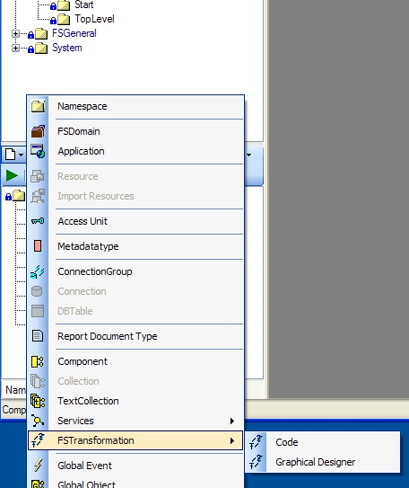
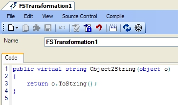
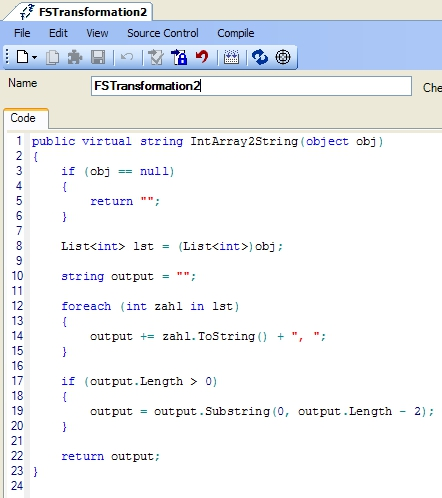
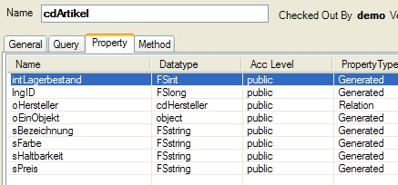
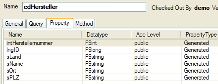
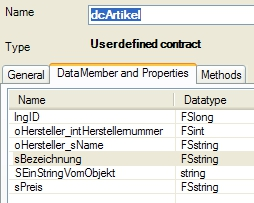
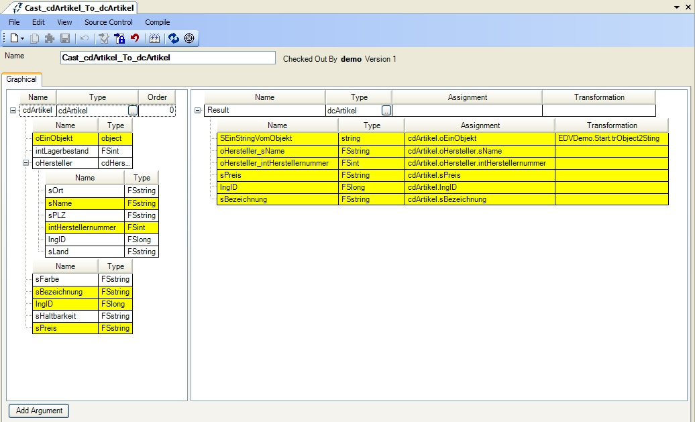
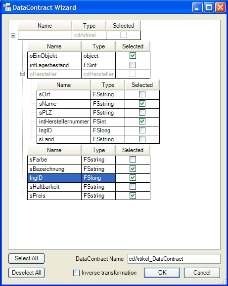

Transformationen
Mit Hilfe von Transformationen können ein oder mehrere Eingabeparameter in einen Ausgabeparameter umgewandelt werden. Dies ist vor allem in Bezug auf Webservices hilfreich, bei dem z.B. eine Component, die nur im Webservice, jedoch nicht am Client bekannt ist, in einen Data Contract überführt werden soll.
Es gibt zwei Arten von Transformationen: Eine graphische Transformation, bei der Properties der Eingabeparameter mit den Properties des Ausgabeparameters visuell verknüpft werden können und eine Code-Transformation, in der per C# die Eingabeparameter programmatisch in einen Ausgabeparameter konvertiert werden.
Anlegen von Transformationen:

Transformationen werden in einem Namespace über das Erstellmenü oder über Rechtsklick auf den Namespace in der unteren Treeview > New > FSTransformation erstellt.
Code-Transformation
Mit Hilfe der Code-Transformation können beliebig viele Eingabeparameter in einen Ausgabeparameter umgewandelt werden. Der Vorteil gegenüber graphischen Transformationen ist, dass der Komplexität der Transformation keine Grenze gesetzt ist.
Beispiel 1:
Die wohl kürzeste Code-Transformation ist die Umwandlung eines Typs in einen anderen. Hier dient als Beispiel die Umwandlung eines objects in einen string. Diese Operation kann z.B. von C# nicht implizit ausgeführt werden. Natürlich würde diese Umwandlung normalerweise vom Programmierer mit dem Aufruf der ToString()-Methode auf dem object realisiert werden. Wir wollen dies aber zu Anschauungszwecken in einer Code-Transformation abbilden:

Beispiel 2:
Als etwas komplexeres Beispiel wird eine Liste von Integern in einen String umgewandelt, in dem alle in der Liste enthaltenen Zahlen per Komma getrennt hintereinander stehen.
Der Eingabeparameter ist also eine List<int> mit den Werten [2, 4, 6, 8] und als Ausgabe soll der String in Form von 2, 4, 6, 8 zurückgegeben werden. Die folgende Code-Transformation setzt dies um:
Komplexere Code-Transformation:

Eine Code-Transformation besteht immer aus einer einzigen Methode. Dabei sind Ref- und Out-Parameter nicht zulässig.
Graphische Transformation
Graphische Transformationen eignen sich besonders dafür, aus einer Component einen Data Contract und umgekehrt zu transformieren.
Beispiel:
Es existieren die Components cdArtikel und cdHersteller. Der Artikel implementiert eine Relation zu einem Hersteller.
 
Es soll auf Basis dieser Components ein Data Contract erstellt werden, der allerdings nicht alle Properties bei der Component beinhaltet. Dieser wird wie folgt erstellt:

Nun existieren die beiden Components und der Data Contract. Die Components und der Data Contract haben im FS jedoch keinerlei Verknüpfung. Um diese Verknüpfung herzustellen, d.h. festzulegen, wie aus den beiden Components ein Data Contract erstellt werden soll, bedarf es einer graphischen Transformation. Diese sieht wie folgt aus:

Name
Definiert den Namen der Transformation.
Auf der linken Seite wird der Datentyp des Eingabeparameters ausgewählt (im Beispiel cdArtikel). Über den Button Add Argument können zusätzliche Eingabeparameter in die Transformation eingebunden werden.
Alle Relationen in der jeweiligen Component (hier die Relation auf cdHersteller) werden in der Baumstruktur angezeigt.
Auf der rechten Seite wird der Typ des Ausgabeparameters definiert (in diesem Beispiel dcArtikel). Anschließend können auf der linken Seite Properties markiert und per Drag&Drop auf ein Property des Ausgabeparameters gezogen werden. Verknüpfte Properties werden gelb markiert. Wird ein gelbes Property mit der Maus angeklickt, wird sein verknüpftes Property auf der anderen Seite grün markiert. So kann schnell eingesehen werden, welches Property der linken mit welchem Property der rechten Seite verknüpft ist.
Transformationen der Properties
Es kann vorkommen, dass die Properties, die verbunden werden sollen, vom Typ her nicht zusammenpassen. Im Beispiel befindet sich in cdArtikel ein Property namens oEinObjekt vom Typ object. Dieses ist jedoch in dcArtikel mit dem Property SEinStringVomObjekt verknüpft, welches vom Typ string ist.
In diesen Fällen können pro Property wiederum Transformationen definiert werden, mit denen die Properties selbst transformiert werden sollen. Im Beispiel wird cdArtikel.oEinObjekt mit Hilfe der trObject2String-Transformation nach dcArtikel.SEinStringVomObjekt transformiert.
Dabei ist trObject2String äquivalent zur FSTransformation1 aus Beispiel 1 im Kapitel Code-Transformation:
Transformation von Object nach String
Ableiten und Customizen von Transformationen
Transformationen können gecustomized werden. Ableitungen sind nur für Code-Transformationen zulässig. In Code-Transformationen können die Methoden normal überschrieben werden.
In graphischen Transformationen können neue Property-Verbindungen hergestellt oder Property-Transformationen ausgetauscht werden. Das Hinzufügen neuer Argumente ist nicht zulässig.
Generierung des Data Contracts und der Transformationen aus Components
Um die Erstellung von graphischen Transformationen erheblich zu vereinfachen, kann FS aus Components heraus eigenständig Data Contracts und die zugehörigen Transformationen zwischen der Component und des Data Contracts generieren. Hierzu muss in einer Component im Menü Edit > Autogenerate Data Contract gewählt werden.
Data Contract Wizard:

In diesem Formular können die Properties selektiert werden, die der Data Contract beinhalten soll. Mit dem Häkchen Inverse transformation kann gewählt werden, ob auch eine Transformation vom Data Contract zurück zur Component erstellt werden soll. Mit Klick auf den Button OK werden im Namespace der Data Contract und die zugehörigen Transformationen erzeugt.